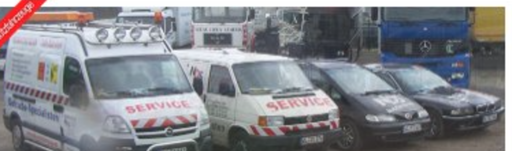
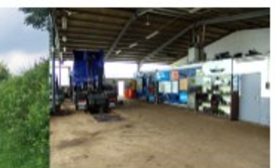
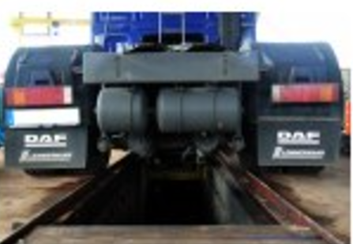
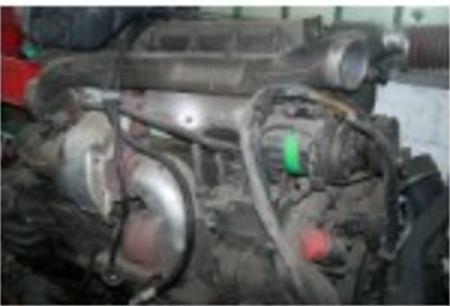

Winter-Check für Nutzfahrzeuge
Batterie, Frostschutz, Bremsen und Reifenprofil verlieren im Winter am schnellsten an Reserve. Ein kurzer Check vor der kalten Jahreszeit spart oft einen teuren Ausfall mitten in der Tour.
Meisterbetrieb für Kfz-Reparatur und Nutzfahrzeughandel in Neu Wulmstorf. LKW, PKW, Omnibusse und Anhänger — Prüfung, Reparatur, An- und Verkauf. HU, AU und SP nehmen wir im eigenen Haus ab, und wir sagen Ihnen vorher, wann Ihr Fahrzeug wieder auf der Straße steht.
Lessingstraße 59c · 21629 Neu Wulmstorf
HU · AU · SP
Prüfungen im eigenen Haus
Meisterbetrieb
Kfz-Reparatur-Service
Ganz Deutschland
Abschleppservice
Auch am Wochenende
Reparatur nach Absprache
NDS Nutzfahrzeuge ist ein Meisterbetrieb in Neu Wulmstorf: Kfz-Reparatur-Service und Handel unter einem Dach. Bei uns arbeiten Leute, die Nutzfahrzeuge nicht nur reparieren, sondern täglich kaufen, verkaufen und zerlegen — deshalb wissen wir meist schon am Telefon, woran es liegt.
Vom LKW einer Spedition über den Transporter eines Handwerksbetriebs bis zum Reisebus: geprüft, repariert und mit einem klaren Termin zurück auf die Straße. Was wir nicht selbst machen können, sagen wir Ihnen offen.

Hauptuntersuchung, Abgasuntersuchung und Sicherheitsprüfung nehmen wir direkt bei uns ab — ohne zweiten Termin bei einer fremden Prüfstelle. Dazu Tachographendienst und Prüfung der Aufbauten.
Reparaturen aller Art an LKW, PKW und Bussen, Bremsenservice, Wartung und Diagnose. Wenn ein Fahrzeug dringend zurück in den Einsatz muss, arbeiten wir nach Absprache auch am Wochenende.
Abschleppservice in ganz Deutschland. Im Lager führen wir Neu- und Gebrauchtteile für Nutzfahrzeuge — von Gebrauchtkomponenten bis zu neuwertigen Ersatzteilen. Fragen Sie an, wir schauen nach.



Für Speditionen, Handwerksbetriebe und andere Unternehmen mit mehreren Fahrzeugen bieten wir feste Ansprechpartner, priorisierte Termine bei Ausfällen und Sammelrechnung. Sprechen Sie uns auf ein Wartungspaket für Ihren Fuhrpark an.
Flottenanfrage stellenBeispielbestand — täglich kommen neue Fahrzeuge und Gebrauchtkomponenten dazu. Ein Auszug aus dem aktuellen Hof:
Ein Anruf reicht auch: 040 / 70 10 20 52. Schriftlich geht es hier — nennen Sie Fahrzeug, Anliegen und Ihren Wunschtermin, wir melden uns mit einer verbindlichen Zeit zurück.
Öffnungszeiten
Wochenend-Reparatur nach Absprache. Abschleppservice auch außerhalb der Öffnungszeiten.
Wir melden uns werktags innerhalb eines Arbeitstages mit einem verbindlichen Termin. Eilt es? Rufen Sie uns an: 040 / 70 10 20 52.
Sie bringen Ihr Fahrzeug zum vereinbarten Termin vorbei, wir nehmen HU, AU und SP direkt bei uns im Haus ab — ein zweiter Termin bei einer externen Prüfstelle entfällt. Bei Mängeln sagen wir Ihnen vor Ort, was zu tun ist.
Sprechen Sie uns bei der Terminvereinbarung darauf an — je nach Werkstattauslastung finden wir eine Lösung, gerade bei Firmenfahrzeugen mit engem Zeitplan.
Unser Abschleppservice ist auch außerhalb der Öffnungszeiten erreichbar. Rufen Sie uns an, wir sagen Ihnen direkt, wie es weitergeht.
Ja — im Lager haben wir sowohl gebrauchte als auch neuwertige Ersatzteile für Nutzfahrzeuge. Fragen Sie einfach an, wir schauen nach, ob das passende Teil vorrätig ist.
Beides — vom Einzelfahrzeug bis zum mehrköpfigen Fuhrpark. Nennen Sie uns kurz Fahrzeugtyp, Baujahr und Zustand, den Rest klären wir am Telefon.
Batterie, Frostschutz, Bremsen und Reifenprofil verlieren im Winter am schnellsten an Reserve. Ein kurzer Check vor der kalten Jahreszeit spart oft einen teuren Ausfall mitten in der Tour.
Das Datum der nächsten Hauptuntersuchung steht auf der Prüfplakette am Kennzeichen. Wer rechtzeitig einen Termin macht, vermeidet Stress kurz vor Fristablauf — und Bußgelder bei Überschreitung.
Warnblinker an, Warnweste anziehen, hinter der Leitplanke in Sicherheit bringen und erst dann den Notruf bzw. Abschleppdienst rufen. Standort möglichst genau angeben — das beschleunigt die Anfahrt spürbar.
Südwestlich von Hamburg, wenige Minuten von der A26 und der B73. Platz für Sattelzüge und Anhänger direkt auf dem Hof.
Route planen